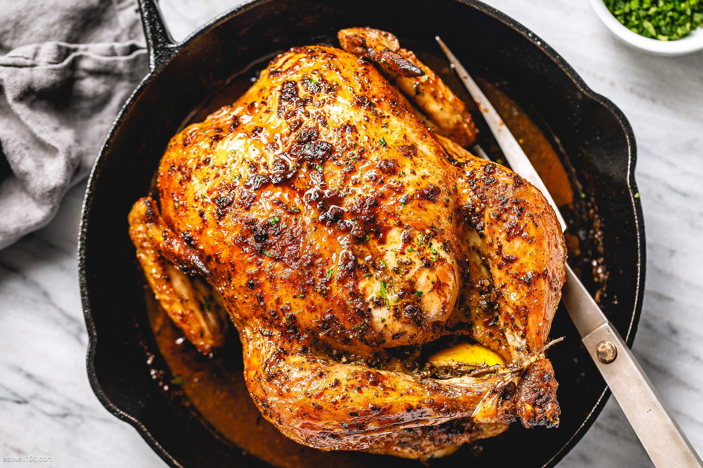

Mead, an ancient alcoholic beverage made from fermented honey, holds a special place in the history of Viking cuisine. The Vikings highly valued mead not only for its intoxicating qualities but also for its cultural and ceremonial significance. Mead was often associated with celebrations, feasts, and rituals, reflecting its esteemed status in Norse society.
The tradition of infusing dishes with mead or other alcoholic beverages was a way to elevate the flavors and create a richer culinary experience. Roasting meat with mead added a unique depth of flavor that complemented the savory elements of the dish. The technique of using mead in cooking can be traced back to Viking times, where it was used in various recipes to enhance taste and offer a nod to the gods and the warriors.
Today, mead-infused roasted chicken connects modern diners with the flavors of ancient feasts. It’s a tribute to the Vikings' innovative use of available resources and their ability to create memorable dishes that honored their traditions and celebrations. Serving this dish brings a touch of history to the table, blending the rich heritage of mead with the comforting flavors of roasted chicken.